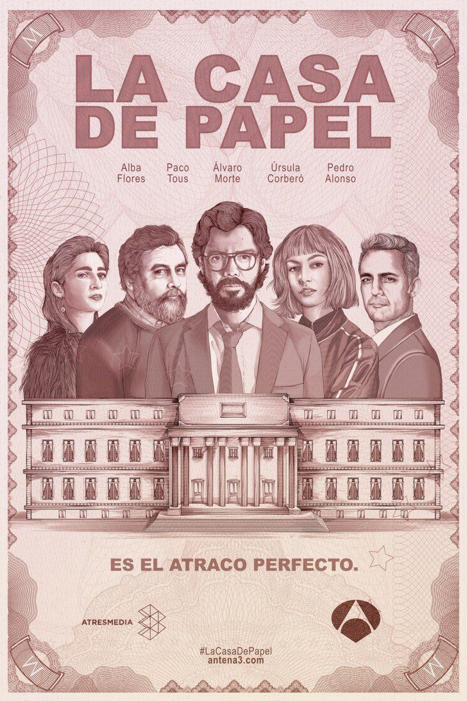

لفيلم ، يُسمى أيضًا الفيلم أو الصورة المتحركة ، هو شكل فني مرئي يستخدم لمحاكاة التجارب التي تنقل الأفكار أو القصص أو التصورات أو المشاعر أو الجمال أو الجو ، عن طريق الصور المتحركة أو المبهمة [المبهمة] ، إلى جانب الصوت ( ونادرًا ما تكون) محفزات حسية أخرى. [1] غالبًا ما تستخدم كلمة "سينما" ، وهي اختصارًا للتصوير السينمائي ، للإشارة إلى صناعة الأفلام وصناعة الأفلام ، وإلى الشكل الفني الناتج عنها. يتم إنشاء الصور المتحركة لفيلم عن طريق تصوير المشاهد الفعلية باستخدام كاميرا الصور المتحركة ، عن طريق تصوير الرسومات أو النماذج المصغرة باستخدام تقنيات الرسوم المتحركة التقليدية ، عن طريق CGI والرسوم المتحركة بالكمبيوتر ، أو عن طريق الجمع بين بعض أو كل هذه التقنيات ، وتأثيرات بصرية أخرى. تقليديا ، تم تسجيل الأفلام على مخزون أفلام السليلويد من خلال عملية كيميائية ضوئية ثم عرضت من خلال جهاز عرض فيلم على شاشة كبيرة. غالبًا ما تكون الأفلام المعاصرة رقمية بالكامل من خلال عملية الإنتاج والتوزيع والعرض بأكملها ، في حين أن الأفلام المسجلة في شكل كيميائي ضوئي تتضمن تقليديًا مسارًا صوتيًا بصريًا مشابهًا (تسجيل رسومي للكلمات المنطوقة والموسيقى والأصوات الأخرى التي تصاحب الصور التي يتم تشغيلها على طول جزء من الفيلم مخصص حصريًا له ، ولا يتم عرضه). الأفلام هي قطع أثرية ثقافية تم إنشاؤها بواسطة ثقافات محددة. إنها تعكس تلك الثقافات ، وتؤثر عليها بدورها. يُعتبر الفيلم شكلاً فنياً هاماً ، ومصدراً للترفيه الشعبي ، ووسيلة قوية لتعليم المواطنين أو تلقينهم. يمنح الأساس المرئي للفيلم قوة اتصال عالمية. أصبحت بعض الأفلام مناطق جذب في جميع أنحاء العالم من خلال استخدام الدبلجة أو الترجمة لترجمة الحوار إلى لغات أخرى. تسمى الصور الفردية التي يتكون منها الفيلم الإطارات. في إسقاط أفلام السيليلويد التقليدية ، يتسبب مصراع دوار في فترات داكنة حيث يتم نقل كل إطار بدوره إلى موضعه ليتم عرضه ، لكن العارض لا يلاحظ الانقطاعات بسبب تأثير يعرف باسم استمرار الرؤية ، حيث تحتفظ العين بصورة مرئية لجزء من الثانية بعد اختفاء مصدرها. يُعزى إدراك الحركة جزئيًا إلى التأثير النفسي المسمى ظاهرة phi. نشأ اسم "فيلم" من حقيقة أن الفيلم الفوتوغرافي (المعروف أيضًا باسم مخزون الأفلام) كان تاريخياً هو الوسيلة لتسجيل وعرض الصور المتحركة. توجد العديد من المصطلحات الأخرى لصورة متحركة فردية ، بما في ذلك الصورة وعرض الصورة والصورة المتحركة والتشغيل الفوتوغرافي والنقر. المصطلح الأكثر شيوعًا في الولايات المتحدة هو الفيلم ، بينما يفضل الفيلم في أوروبا. تشمل المصطلحات الشائعة في المجال بشكل عام الشاشة الكبيرة والشاشة الفضية والأفلام والسينما. يتم استخدام آخر هذه بشكل شائع ، كمصطلح شامل ، في النصوص العلمية والمقالات النقدية. في السنوات الأولى ، تم استخدام ورقة الكلمات في بعض الأحيان بدلاً من الشاشة.
An engineer installs himself in a prison he helped design, in order to save his falsely accused brother from a death sentence.
Walter White, a chemistry teacher, discovers that he has cancer and decides to get into the meth-making business to repay his medical debts. His priorities begin to change when he partners with Jesse.
A criminal mastermind who goes by "The Professor" has a plan to pull off the biggest heist in recorded history to print billions of euros in the Royal Mint of Spain. To help him carry out the ambitious plan, he recruits eight people with certain abilities and who have nothing to lose. The group of thieves take hostages to aid in their negotiations with the authorities, who strategize to come up with a way to capture The Professor. As more time elapses, the robbers prepare for a showdown with the police.